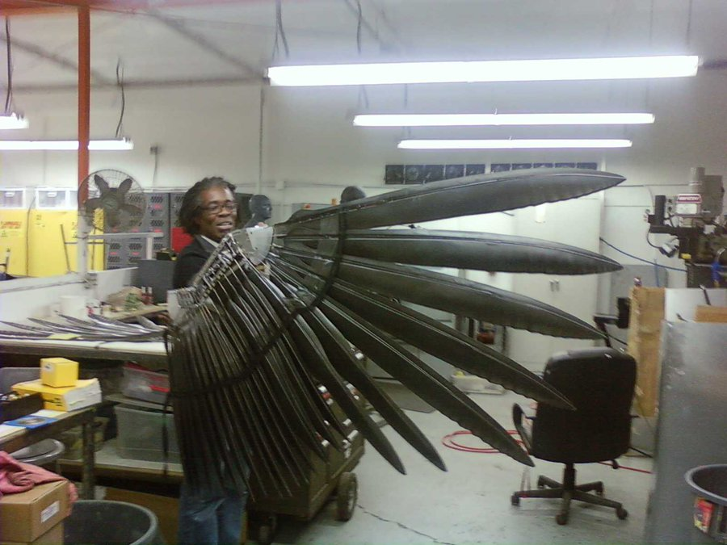

کن پندرز، بهتازگی تصویری از لباس والچر در فیلم لغوشده Spider-Man 4 را منتشر کرده است.
بعد از پایان سهگانهی Spider-Man به کارگردانی سم ریمی قرار بود تا قسمت چهارم این مجموعه با حضور یکی از ضدقهرمانهایی که طرفداران چند سال بعد او را در MCU دیدند، ساخته شود. بهتازگی کن پندرز، نویسنده و خالق کمیکبوک که بیشتر به خاطر کار روی کمیک Sonic the Hedgehog شناخته میشود، در توییتر گفته که او به ملاقات چند نفر از دوستان خودش رفت که قبلا روی لباس والچر کار میکردند. پندرز در توییتر خودش ضمن انتشار یک تصویر از بالهای لباس والچر در فیلم Spider-Man 4 اعلام کرد که وظیفهی ایفای نقش این ضدقهرمان بر عهدهی جان مالکوویچ بود. بعد از اینکه کار ساخت فیلم بهطور کلی لغو شد، تمامی لوازم و تجهیزات ساخت فیلم به صاحبهای آنها بازگردانده شد. همین امر هم سبب شد تا پندرز بعد از ۱۵ سال با انتشار این متن، تصویری از بالهای والچر در فیلم لغوشده Spider-Man 4 منتشر کند. «قبل از قطع شدن ارتباط توبی [مگوایر] و سم [ریمی] با سونی، کار روی فیلم Spider-Man 4 آغاز شده بود. من دوستان خودم را دیدم که روی لباسی از والچر برای جان مالکوویچ کار میکردند. وقتی که کار ساخت فیلم بهطور کلی لغو شد، تمامی تجهیزات و لوازم بازگردانده شد».
در ادامهی توییتها، پندرز اعلام کرد که یک قالب کامل از لباس والچر آماده شده بود. بااینحال، بهدلیل اینکه انتخاب مالکوویچ بهطور کامل نهایی نشده بود، او اجازهی عکس گرفتن از آن را نداشت. بهطور دقیق مشخص نیست که برای این لباس چه اتفاقی افتاده است، اما پندرز حدس میزند که این لباس یا بهطور کلی نابود شد یا در انبار سونی قرار دارد. مدتی بعد از لغو Spider-Man 4 و بهطور دقیقتر در سال ۲۰۱۷، در فیلم Spider-Man: Homecoming برای اولینبار موفق به دیدن شخصیت والچر با نقش آفرینی مایکل کیتون شدیم. فیلم Spider-Man 4 قرار بود تا به کارگردانی سم ریمی و با نقش آفرینی توبی مگوایر بهعنوان اسپایدرمن، در سال ۲۰۱۱ اکران شود. اما سم ریمی بهدلیل وجود یک سری اختلاف نظرها درنهایت از کار روی این پروژه کنار کشید و همین امر سبب شد تا کار ساخت سری The Amazing Spider-Man با بازی اندرو گارفیلد آغاز شود. در ابتدا، ریمی هیچگاه بازگشت به دنیای مرد عنکبوتی و ساخت یک فیلم جدید با بازیگران و کاراکترهای سهگانه مثل توبی مگوایر را امکانپذیر نمیدانست. اما بعد از انتشار فیلم Spider-Man: No Way Home در سال ۲۰۲۱ این کارگردان کمی بیشتر درمورد ساخت یک فیلم دیگر از اسپایدرمن فکر کرد. او در اینباره گفت: «من فکر نمیکردم که چنین چیزی [ساخت یک فیلم دیگر از Spider-Man] امکانپذیر باشد، اما بعد از مالتیورس، حالا هر چیزی ممکن است و من کاملا آمادگی [برای ساخت یک فیلم دیگر از مردعنکبوتی را] دارم». نظر شما در رابطه با جدیدترین اخبار سینما و تلویزیون چیست؟ به نظر شما فیلم دیگری از Spider-Man به کارگردانی سم ریمی ساخته خواهد شد؟